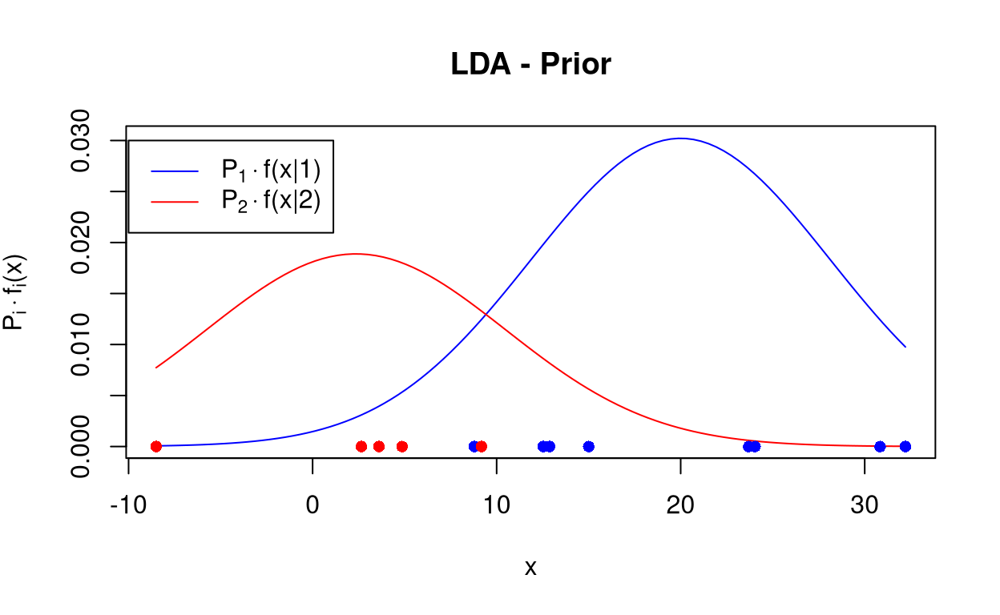
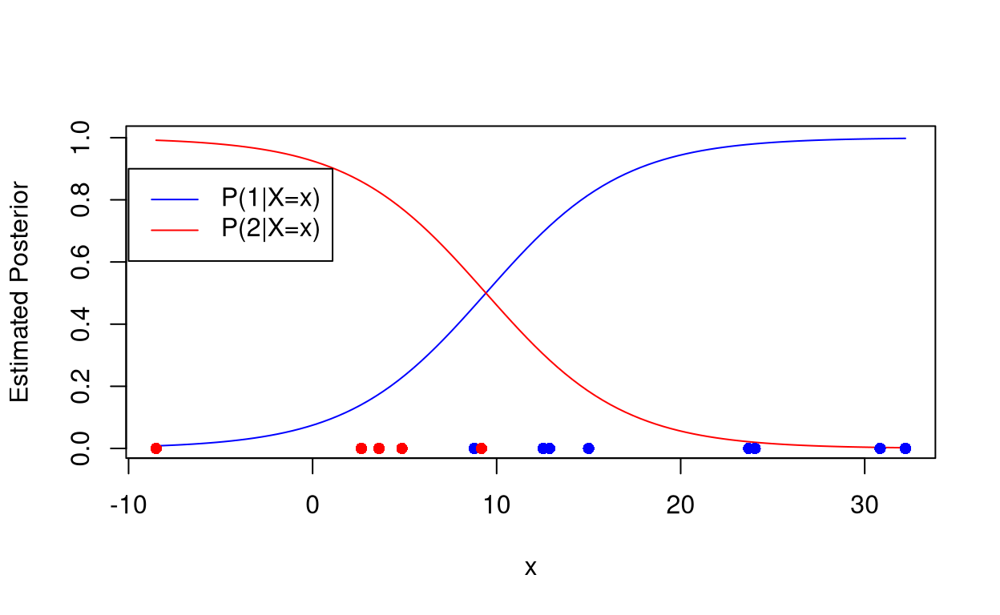
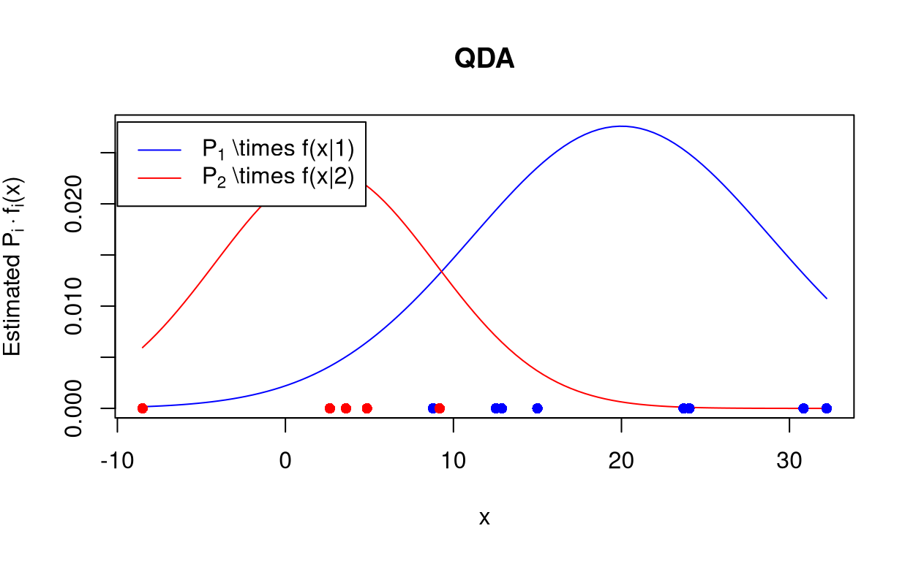
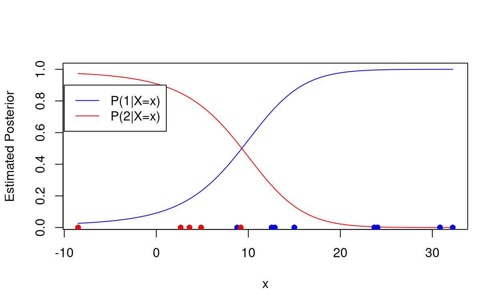
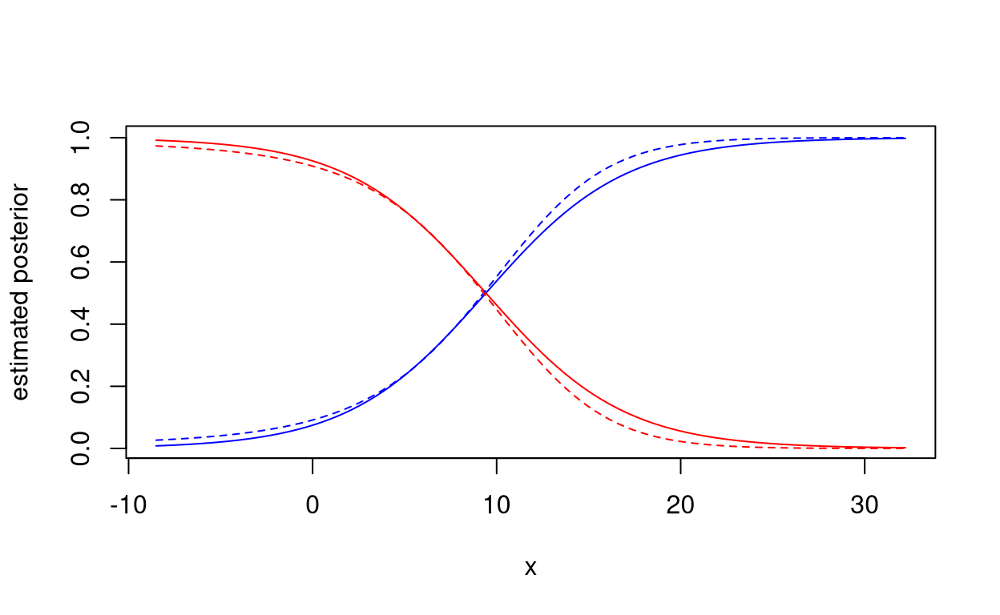
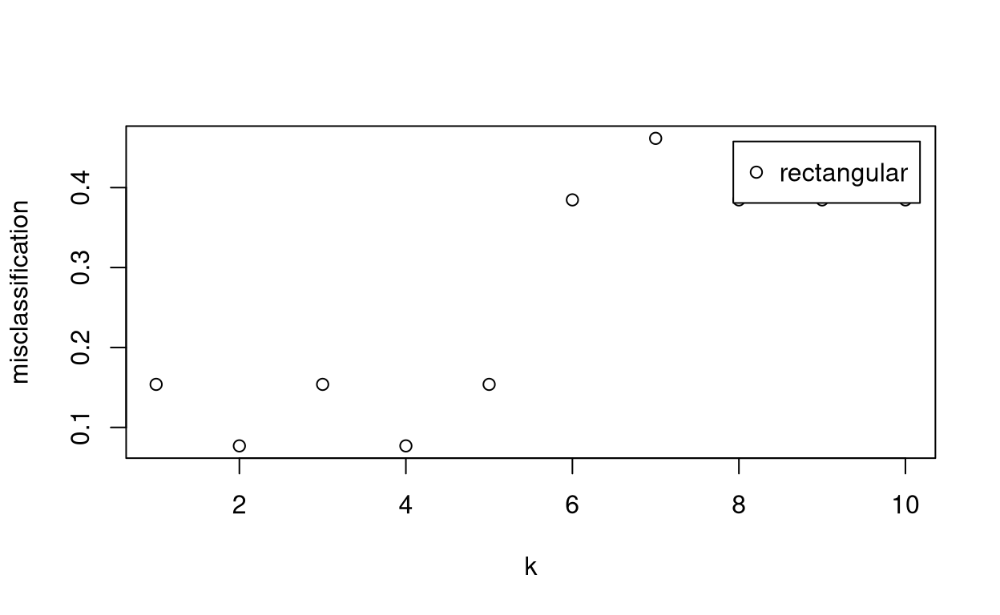
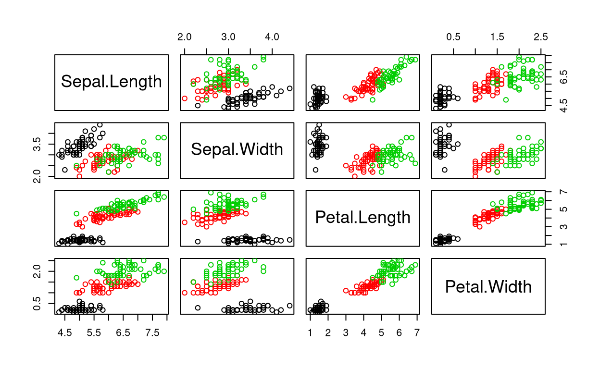
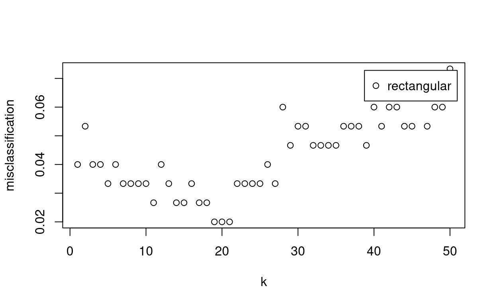
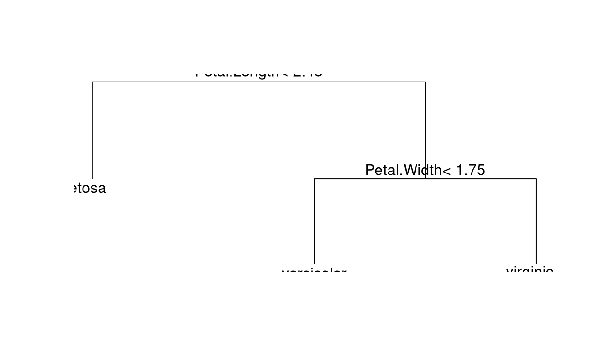

First of all load the relevant libraries.
library(MASS)
library(class)
library(kknn)
library(rpart)
library(latex2exp)We also load the data into memory.
df <- read.table(file = "../data/cytokine.txt", header = TRUE)
warning("Double check the dimensions of the data set")## Warning: Double check the dimensions of the data setWe consider to classes and one feature.
feature_1 <- df$Infg
group <- df$group
group_1 <- which(df$group == "A")
group_2 <- which(df$group == "B")Let us check the numerosities.
(n_1 <- length(group_1))## [1] 8(n_2 <- length(group_2))## [1] 5n <- n_1 + n_2We make the following hypothesis:
We estimate the prior probabilities of both groups.
prior_1 <- n_1 / n
prior_2 <- n_2 / nThe mean:
mu_1 <- mean(feature_1[group_1])
mu_2 <- mean(feature_1[group_2])The variance:
sigma_1 <- var(feature_1[group_1])
sigma_2 <- var(feature_1[group_2])
sigma <- ((n_1-1) * sigma_1 + (n_2-1) * sigma_2) / (n_1 + n_2 - 2)We plot the conditional distributions to grasp the differences.
x <- seq(from = min(feature_1), to = max(feature_1), length.out = 100)
plot(x, prior_1 * dnorm(x, mu_1, sqrt(sigma)), type='l', col='blue', ylab=TeX('$\\widehat{P}_{i} \\times f_{i} (x)$'), main='LDA - Prior')
points(x, prior_2 * dnorm(x, mu_2, sqrt(sigma)), type='l', col='red')
points(feature_1[group_1], rep(0, n_1), pch=16, col='blue')
points(feature_1[group_2], rep(0, n_2), pch=16, col='red')
legend(-10, 0.03, legend=TeX(c('$P_{1} \\times f(x|1)$', '$P_{2} \\times f(x|2)$')), col=c('blue','red'), lty=1)
plot(x, prior_1 * dnorm(x, mu_1, sqrt(sigma)) / (prior_1 * dnorm(x, mu_1, sqrt(sigma)) + prior_2 * dnorm(x, mu_2, sqrt(sigma))), type='l', col='blue', ylab='Estimated Posterior')
points(x, prior_2 * dnorm(x, mu_2, sqrt(sigma)) / (prior_1 * dnorm(x, mu_1, sqrt(sigma)) + prior_2 * dnorm(x, mu_2, sqrt(sigma))), type='l', col='red')
points(feature_1[group_1], rep(0, n_1), pch=16, col='blue')
points(feature_1[group_2], rep(0, n_2), pch=16, col='red')
legend(-10, 0.9, legend=TeX(c('$P(1|X=x)$', '$P(2|X=x)$')), col=c('blue','red'), lty=1)
We now change the assumptions to: - \(feature_{1} | group_{1} \sim \mathcal{N}\left(\mu_{1}, \sigma_{1}^{2}\right)\) - \(feature_{1} | group_{2} \sim \mathcal{N}\left(\mu_{2}, \sigma_{2}^{2}\right)\)
We plot the estimated condidtional distribution of feature_1.
plot(x, prior_1 * dnorm(x, mu_1, sqrt(sigma_1)), type='l', col='blue', ylab=TeX('Estimated $P_i \\times f_i(x)'), main='QDA')
points(x, prior_2 * dnorm(x, mu_2, sqrt(sigma_2)), type='l', col='red')
points(feature_1[group_1], rep(0, n_1), pch=16, col='blue')
points(feature_1[group_2], rep(0, n_2), pch=16, col='red')
legend(-10, 0.028, legend=TeX(c('P_1 \\times f(x|1)', 'P_2 \\times f(x|2)')), col=c('blue','red'), lty=1)
We also plot the posterior probabilities of the groups.
plot(x, prior_1 * dnorm(x, mu_1, sqrt(sigma_1)) / (prior_1 * dnorm(x, mu_1, sqrt(sigma_1)) + prior_2 * dnorm(x, mu_2, sqrt(sigma_2))), type='l', col='blue', ylab='Estimated Posterior')
points(x, prior_2 * dnorm(x, mu_2, sqrt(sigma_2)) / (prior_1 * dnorm(x, mu_1, sqrt(sigma_1)) + prior_2 * dnorm(x, mu_2, sqrt(sigma_2))), type='l', col='red')
points(feature_1[group_1], rep(0, n_1), pch=16, col='blue')
points(feature_1[group_2], rep(0, n_2), pch=16, col='red')
legend(-10, 0.9, legend=c('P(1|X=x)', 'P(2|X=x)'), col=c('blue','red'), lty=1)
Let us fit the models.
lda_fit <- lda(group ~ feature_1)
qda_fit <- qda(group ~ feature_1)We also estimate the posterior group probabilities provided by the two models for a subject with Infg equals to zero.
predict(lda_fit, data.frame(feature_1 = 0))## $class
## [1] B
## Levels: A B
##
## $posterior
## A B
## 1 0.07476761 0.9252324
##
## $x
## LD1
## 1 -1.625897predict(qda_fit, data.frame(feature_1 = 0))## $class
## [1] B
## Levels: A B
##
## $posterior
## A B
## 1 0.09148347 0.9085165We estimate the posterior probabilities on a regular grid provided by the models.
x <- data.frame(feature_1=seq(min(feature_1), max(feature_1), length=100))
lda_posterior <- predict(lda_fit, x)$posterior
qda_posterior <- predict(qda_fit, x)$posteriorWe also plot the posteriors.
# Plot the estimated probabilities according to LDA
# LDA Group 1
plot(x[,1], lda_posterior[,1], type='l', col='blue', xlab='x', ylab='estimated posterior')
# LDA Group 2
points(x[,1], lda_posterior[,2], type='l', col='red')
# Overplot the estimated probabilities according to QDA
# QDA Group 1
points(x[,1], qda_posterior[,1], type='l', col='blue', lty=2, xlab='x', ylab='estimated posterior')
# QDA Group 2
points(x[,1], qda_posterior[,2], type='l', col='red', lty=2)
We fit the model on a regular grid.
x <- data.frame(feature_1=seq(min(feature_1), max(feature_1), length=100))
knn.fitted <- knn(train = feature_1, test = x, cl = group, k = 3, prob=T)To select the value of \(k\), we employ a leave-one-out cross-validation method.
train.cv <- train.kknn(group ~ feature_1, data = data.frame(feature_1, group),
kmax = 10, scale = F, kernel = 'rectangular')
plot(train.cv)
We fit the model
rpart.fit <- rpart(group ~ feature_1)and estimate the posterior group probabilities for a subject with \(Infg = 0\).
predict(rpart.fit, data.frame(feature_1 = 0))## A B
## [1,] 0.6153846 0.3846154We also estimate posterior probabilities on a regulard grid.
x <- data.frame(feature_1=seq(min(feature_1), max(feature_1), length=100))
head(predict(rpart.fit, x))## A B
## [1,] 0.6153846 0.3846154
## [2,] 0.6153846 0.3846154
## [3,] 0.6153846 0.3846154
## [4,] 0.6153846 0.3846154
## [5,] 0.6153846 0.3846154
## [6,] 0.6153846 0.3846154We are going to consider three groups and four features: Sepal.Length, Sepal.Width, Petal.Length and Petal.Width.
group <- iris[,'Species']
features <- iris[,1:4]
pairs(features, col = group)
We fit the QDA model
qda.fit <- qda(group ~ . , features)We predict the posterior group probabilities for a flower with Sepal.Length \(= 6.5\), Sepal.Width \(= 2.5\), Sepal.Width \(= 2.5\), Petal.Length \(= 5\), Petal.Width \(= 1.5\).
predict(qda.fit, data.frame(Sepal.Length = 6.5, Sepal.Width = 2.5, Petal.Length = 5, Petal.Width = 1.5))## $class
## [1] versicolor
## Levels: setosa versicolor virginica
##
## $posterior
## setosa versicolor virginica
## 1 9.636433e-111 0.6715146 0.3284854We also predict posterior probabilities for the flowers in the original dataset.
head(data.frame(predict(qda.fit)))From this, we compute the confusion matrix.
kable(table(True.class = group, Predicted.class = predict(qda.fit)$class))| setosa | versicolor | virginica | |
|---|---|---|---|
| setosa | 50 | 0 | 0 |
| versicolor | 0 | 48 | 2 |
| virginica | 0 | 1 | 49 |
We also report the (apparent) Accuracy and Error Rate
(Conf <- table(True.class = group, Predicted.class = predict(qda.fit)$class))## Predicted.class
## True.class setosa versicolor virginica
## setosa 50 0 0
## versicolor 0 48 2
## virginica 0 1 49(Accuracy <- sum(diag(Conf)) / sum(Conf))## [1] 0.98(ErrorRate <- 1 - Accuracy)## [1] 0.02We report the confusion matrix
kable(table(True.class = group, Predicted.class = predict(qda.fit, method = "looCV")$class))| setosa | versicolor | virginica | |
|---|---|---|---|
| setosa | 50 | 0 | 0 |
| versicolor | 0 | 47 | 3 |
| virginica | 0 | 1 | 49 |
And the (apparent) Accuracy and Error Rate
(ConfCV <- table(True.class = group, Predicted.class = predict(qda.fit, method = "looCV")$class))## Predicted.class
## True.class setosa versicolor virginica
## setosa 50 0 0
## versicolor 0 47 3
## virginica 0 1 49(AccuracyCV <- sum(diag(ConfCV)) / sum(ConfCV))## [1] 0.9733333(ErrorRateCV <- 1 - AccuracyCV)## [1] 0.02666667We fit the model
group <- iris[, "Species"]
features <- iris[, 1:4]
knn.fitted <- knn(train = features, test = features, cl = group, k = 20, prob = T)We predict the posterior group probabilities for a flower with Sepal.Length \(= 6.5\), Sepal.Width \(= 2.5\), Sepal.Width \(= 2.5\), Petal.Length \(= 5\), Petal.Width \(= 1.5\).
knn.fitted <- knn(train = features, test = data.frame(Sepal.Length = 6.5, Sepal.Width = 2.5, Petal.Length = 5, Petal.Width = 1.5), cl = group, k = 20, prob = T)We select the value of \(k\) by means of leave-one-out cross validation method.
train.cv <- train.kknn(group ~ .,
data = data.frame(features, group),
kmax = 50, scale = F, kernel = "rectangular"
)
plot(train.cv)
We compute the confusion matrix,
knn.fitted <- knn(train = features, test = features, cl = group, k = train.cv$best.parameters$k, prob = T)
kable(table(True.class = group, Predicted.class = knn.fitted))| setosa | versicolor | virginica | |
|---|---|---|---|
| setosa | 50 | 0 | 0 |
| versicolor | 0 | 48 | 2 |
| virginica | 0 | 1 | 49 |
the (apparent) accuracy and error rate
(Conf <- table(True.class = group, Predicted.class = knn.fitted))## Predicted.class
## True.class setosa versicolor virginica
## setosa 50 0 0
## versicolor 0 48 2
## virginica 0 1 49(Accuracy <- sum(diag(Conf)) / sum(Conf))## [1] 0.98(ErrorRate <- 1 - Accuracy)## [1] 0.02We fit the model
group <- iris[, "Species"]
features <- iris[, 1:4]
rpart.fit <- rpart(group ~ ., data = features)and we plot the results
plot(rpart.fit)
text(rpart.fit)
We predict the posterior group probabilities for a flower with Sepal.Length \(= 6.5\), Sepal.Width \(= 2.5\), Sepal.Width \(= 2.5\), Petal.Length \(= 5\), Petal.Width \(= 1.5\).
predict(rpart.fit, data.frame(Sepal.Length = 6.5, Sepal.Width = 2.5, Petal.Length = 5, Petal.Width = 1.5))## setosa versicolor virginica
## 1 0 0.9074074 0.09259259We also estimate the probabilities of the original dataset.
head(predict(rpart.fit))## setosa versicolor virginica
## 1 1 0 0
## 2 1 0 0
## 3 1 0 0
## 4 1 0 0
## 5 1 0 0
## 6 1 0 0We compute the confusion matrix
kable(table(True.class = group, Predicted.class = predict(rpart.fit, type = "class")))| setosa | versicolor | virginica | |
|---|---|---|---|
| setosa | 50 | 0 | 0 |
| versicolor | 0 | 49 | 1 |
| virginica | 0 | 5 | 45 |
and we plot the (apparent) accuracy and error rate.
(Conf <- table(True.class = group, Predicted.class = predict(rpart.fit, type = "class")))## Predicted.class
## True.class setosa versicolor virginica
## setosa 50 0 0
## versicolor 0 49 1
## virginica 0 5 45(Accuracy <- sum(diag(Conf)) / sum(Conf))## [1] 0.96(ErrorRate <- 1 - Accuracy)## [1] 0.04